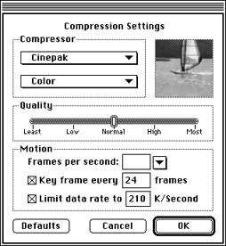

MovieCompress compresses movies using any of the Apple QuickTime codecs. It lets you specify frame rate, key frame rate, data rate, depth, and codec. This section provides a table of relevant information for each option available during compression. A tutorial-style example follows.
Animation-The Animation compressor has the following characteristics:
Table 1: Animation compressor characteristics.
--------------------------------------------------------
Characteristic |Discussion
--------------------------------------------------------
Description |Works well at all pixel depths. It
|stores images in run-length encoding
|format and works in lossy or lossless
|mode.
--------------------------------------------------------
Recommended |Animation and computer-generated video
Sources |content.
--------------------------------------------------------
Quality |Performance depends on the type of
|image in a scene. Clean images
|generated synthetically generally yield
|good results.Images captured from
|videotape may be problematic if there
|is visual noise.
--------------------------------------------------------
Cinepak-The Cinepak compressor has the following characteristics:
Table 2: Cinepak compressor characteristics.
--------------------------------------------------------
Characteristic |Discussion
--------------------------------------------------------
Description |Lossy algorithm that takes much longer
|to compress than to decompress.Can
|constrain data rates to user-definable
|levels. This is important when
|compressing material for playback from
|CD-ROM discs.
--------------------------------------------------------
Recommended |16-bit and 24-bit video sequences.
Sources |
--------------------------------------------------------
Quality |Higher compression rates, better image
|quality and faster playback speeds than
|the Video compressor.
--------------------------------------------------------
Hints & Tips |For best results, use on raw source
|data that has not already been
|compressed with a lossy compressor.
--------------------------------------------------------
Graphics-The Graphics compressor has the following characteristics:
Table 3: Graphics compressor characteristics.
--------------------------------------------------------
Characteristic |Discussion
--------------------------------------------------------
Description |Generates an image one-half the size of
|the same image compressed with
|Animation compressor. Good alternative
|to Animation compressor if compression
|ratio is more important than
|decompression speed.
--------------------------------------------------------
Recommended |8-bit still images and image sequences
Sources |if compression ratio is more important
|than decompression speed.
--------------------------------------------------------
Hints & Tips|Use this compressor with relatively
|slow storage devices such as CD-ROM
|discs. In that case, the Graphics
|compressor has enough time to
|decompress the image or image sequence.
|
--------------------------------------------------------
Photo/JPEG-The Photo/JPEG compressor has the following characteristics:
Table 4: Photo/JPEG compressor characteristics.
--------------------------------------------------------
Characteristic |Discussion
--------------------------------------------------------
Description |Joint Photographic Experts Group
|algorithm for image compression.
|Compresses each frame in the movie
|separately.
--------------------------------------------------------
Recommended |Images that vary smoothly, that is, no
Sources |sharp edges or detail; nonsynthetic
|images.
--------------------------------------------------------
Quality |Compression ratios depend on source
|image. General range is 5:1 to 50:1 for
|24-bit sources. Good picture quality
|results at 10:1 to 20:1.
--------------------------------------------------------
Video-The Video compressor has the following characteristics:
Table 5: Video compressor characteristics.
--------------------------------------------------------
Characteristic |Discussion
--------------------------------------------------------
Description |Permits fast decompression while
|maintaining acceptable picture quality.
|Allows applications to display color
|images or drawings at interactive
|speed. Supports both spatial and
|temporal compression.
--------------------------------------------------------
Recommended |Sequences of video data. Better suited
Sources |for digitized video content than
|synthetically generated images.
--------------------------------------------------------
Quality |Spatial compression-only ratios from 5:1
|to 8:1 at acceptable quality for 24-bit
|sources.Spatial and temporal
|compression ratios from 5:1 to 25:1 for
|24-bit sources.
--------------------------------------------------------
Note: For smooth displays, pick a frame rate that's divisible by two, because you must eliminate every other frame to end up with smooth transitions between frames. For example, if the original rate was 24, pick 12; if the original rate was 30, pick 15.
Example for using the MovieCompress Tool
This section illustrates the compression of a sample movie with Cinepak.
The settings used in this example are listed below:
The Compression Settings dialog appears.

Figure 1: Compression Settings dialog.
If you choose Best, MovieCompress keeps the original movie's number of frames per second.
This leaves 90 K/Second for the stereo audio track.
A progress dialog is visible as compression takes place.